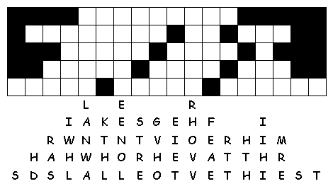

This
week's lessons: Exodus
17:1-7 , Psalm
95 , Romans
5:1-11 , John
4:5-42
Middle-School Pew-work
What daily activities do you do, where you might be surprised to suddenly run into the Saviour of the world?_____________________________________________________________________ ______________________________________________________________________________
What truths about you might you hope Jesus would just not notice?________________________ __________________________________________________________________________________________________________________________________________________________________________________________________________________________________________
|
 |
How
would you respond to Jesus – what would you say if you met
him in this way?
__________________________________ |
Next week's lessons:1 Samuel 16:1-13, Psalm 23, Ephesians 5:8-14 , John 9:1-41
This
week's lessons: Exodus
17:1-7 , Psalm
95 , Romans
5:1-11 , John
4:5-42
Elementary School Pew-work
J O H N N A W D G E
|
Word List |
(John 4:13-14) Jesus said to her, "Everyone who drinks of this water will be thirsty again, but those who drink of the water that I will give them will never be thirsty. The water that I will give will become in them a spring of water gushing up to eternal life." (NRSV) |
from http://www.efree.mb.ca/lectionarypuzzles free to distribute for free with this notice. Words are in a straight line left to right or top to bottom |
||
What
did Jesus ask the woman to give
him?
______________________________________________________________________________
What
does Jesus tell the woman he would have given her if she had asked
him?
______________________________________________________________________________
Where
did Jesus say we should all worship
God?
______________________________________________________________________________
Questions taken from Sunday School Lessons; http://www.sundayschoollessons.com
Created by Puzzlemaker at DiscoverySchool.com
Next week's lessons:1 Samuel 16:1-13, Psalm 23, Ephesians 5:8-14 , John 9:1-41